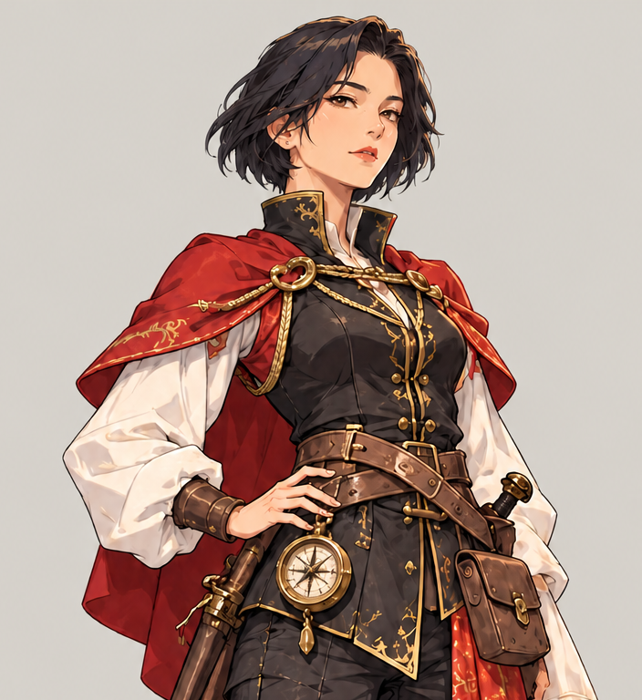
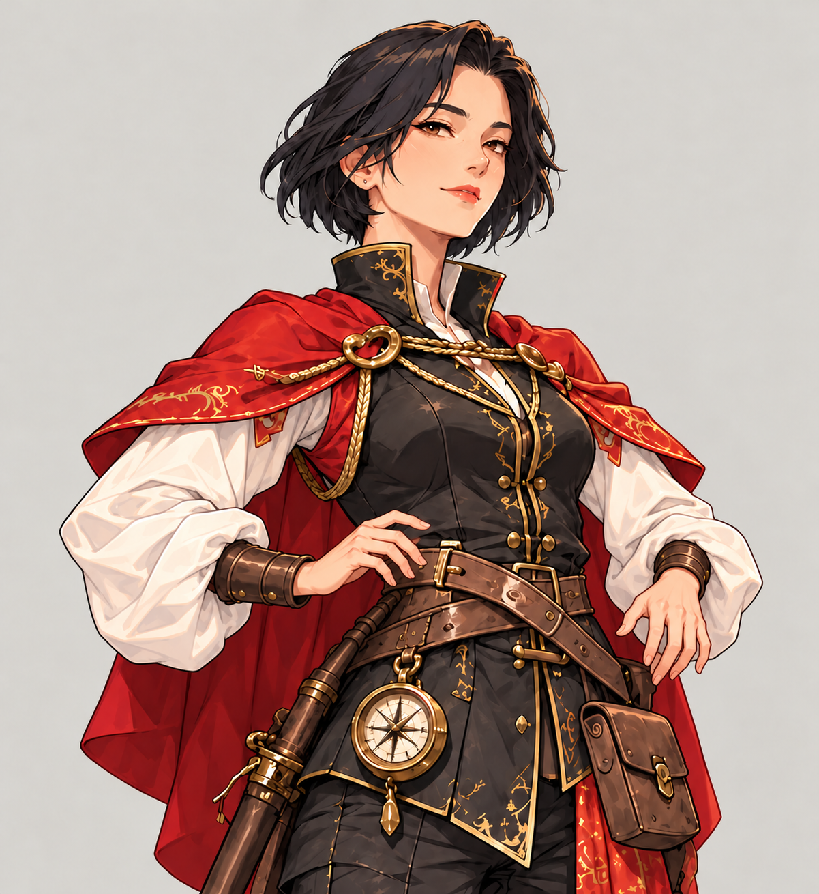
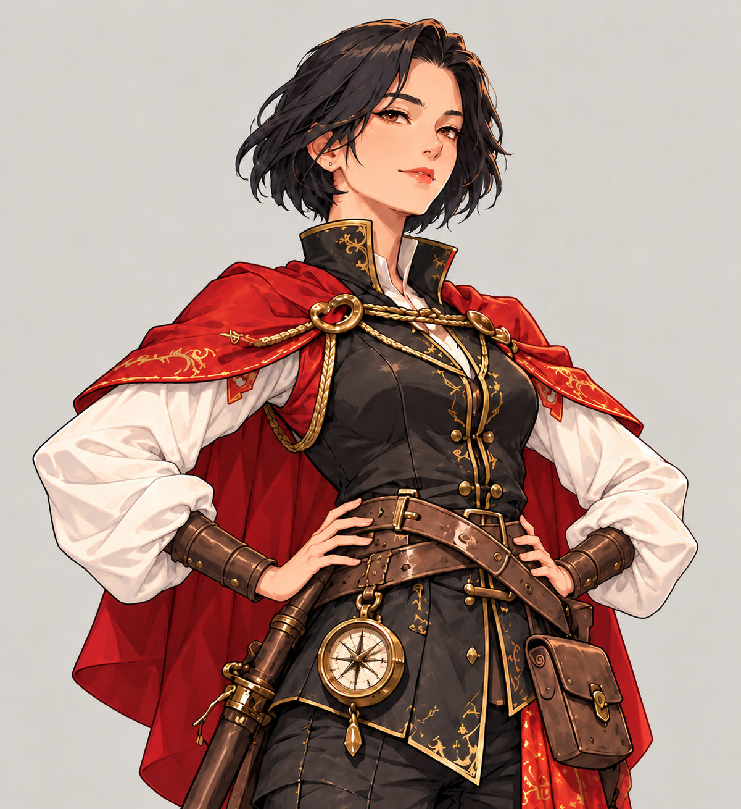

旧版视频已撤下。本页保留静态关键姿势。查看新的二维绑定动画样片。

保留人物身份和服装设计的参考。

检查离开原手位后的手指、腕部与袖口。

修正后手掌更靠腰侧，肘部外展；仍需检查手指和遮挡是否符合预期。
未通过动画一致性验收：原图与候选图的构图和细节并非逐像素一致。不能将这些全幅图淡入淡出当作稳定动画。后续需要固定身体层、手臂分层、关节绑定和手掌接触约束。
目标姿势 中间姿势 原尺寸 / 适应宽度
制作与验收要求 · 返回 01–04 动画